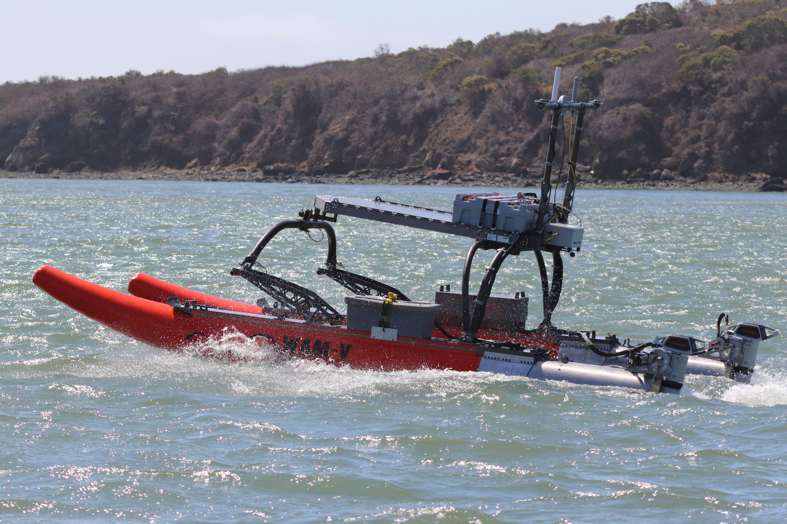

The WAM-V is a super-stable, utility style USV (Unmanned Surface Vehicle) that is commonly used for seafloor mapping and surveillance work.

On the WAM-V team, I undertook diverse responsibilities both within and beyond the scope of my role as a Mechatronics Engineer. Joining as the fifth employee, I played a pivotal role in the company's evolution through an acquisition, contributing significantly to its growth from a tight-knit group to a dynamic team of over 20 professionals.
My expertise spanned the entire spectrum of our autonomous vehicle development (the WAM-V series). This included:
In line with our global reach and commitment to field applications, I consistently traveled to support and collaborate with international teams. A highlight was my deployment in Bahrain, where I was extensively involved in MCM (Mine Countermeasure) projects. This opportunity allowed me to apply our technology in surveillance, seafloor mapping, and other pivotal applications crucial for safety and navigation in maritime environments.
Moreover, my hands-on experience also brought me to remote offshore projects in Alaska, where I tackled challenges head-on and developed bespoke solutions in collaboration with field teams.
Throughout my tenure at OPT, I was dedicated to pushing boundaries, fostering team growth, and delivering exceptional value through our innovations in autonomous marine technology.